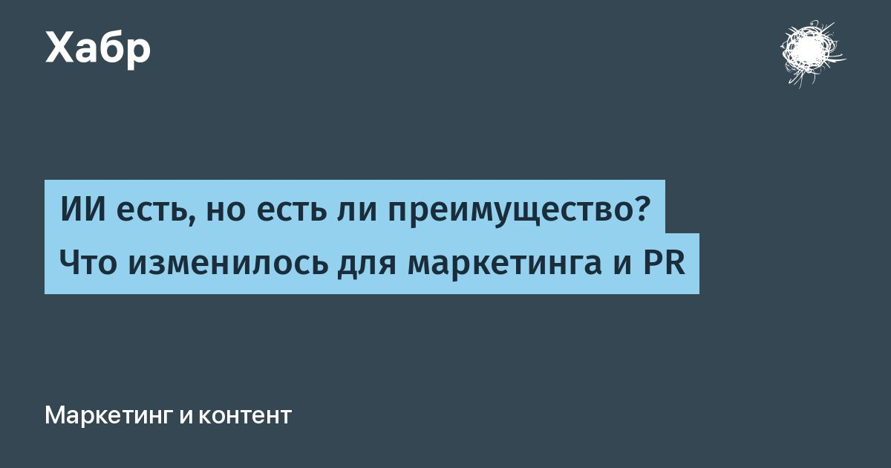

ИИ есть, но есть ли преимущество? Что изменилось для маркетинга и PR
ИИ помогает быстрее писать тексты, собирать презентации и готовить рекламу.
Но между скоростью производства и решением клиента купить продукт остаётся немало работы.
В отчете McKinsey Technology Trends Outlook 2026 это рассматривается на уровне бизнеса.
Для маркетинга и PR из него следуют три изменения.
Читать далее